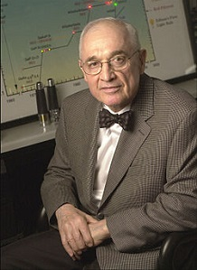

Fiche d'information sur les LED
La Led historiquement :
La première émission de lumière par un semi-conducteur date de 1907 et est découverte par Henry Round. En 1927, le russe Oleg Lossev dépose le premier brevet de ce qui sera appelé plus tard une diode électroluminescente, le carbure de silicium alors utilisé comme semi-conducteur ayant de piètres propriétés électroluminescentes. La découverte de l'émission infrarouge à basse température de l'arséniure de gallium et d'autres semi-conducteurs par Rubin Braunstein en 1955 à la RCA à Princeton permet d'envisager de prometteurs développements. Nick Holonyak Jr. et S. Bevacqua créent la première LED rouge en 1962. Durant quelques années, les chercheurs se limitent à quelques couleurs telles que le rouge (1962), le jaune, le vert et plus tard le bleu (1972). Dans les années 1990, les recherches, entre autres, de Shuji Nakamura et Takashi Mukai de Nichia, dans la technologie des semi-conducteurs InGaN permettent la création de LED bleues de forte luminosité, ensuite adaptées en LED blanches, par adjonction d'un luminophore jaune. Cette avancée permet de nouvelles applications majeures telles que l'éclairage et le rétroéclairage des écrans de téléviseurs et des écrans à cristaux liquides.
Caractéristiques techniques :
- Forme :
- Luminosité :
- Couleurs :
- Modules communs :
Ce composant peut être encapsulé dans divers boîtiers destinés à canaliser le flux de lumière émis de façon précise : cylindrique à bout arrondi en 3, 5, 8 et 10 mm de diamètre, cylindrique à bout plat.
Des LED de forte puissance ont vu le jour au début des années 2000. Dans la première décennie du XXIe siècle, des rendements lumineux d'environ 130 lumens/watt sont ainsi atteints. Par comparaison, les ampoules à filament de tungstène de 60 W atteignent un rendement lumineux d'environ 15 lumens/watt et le rendement lumineux maximum théorique étant de 683 lumen par watt (découlant de la définition de la candela et du lumen).

Utilisations
- Classement selon la puissance :
- les diodes électroluminescentes de faible puissance infèrieure à 1 W. Ce sont les plus connues du grand public car elles sont présentes dans notre quotidien depuis des années. Ce sont elles qui jouent le rôle de voyant lumineux sur les appareils électroménagers par exemple
- les LED de forte puissance supérieure à 2 W. Elles sont en plein essor dans les années 2010 et leurs applications sont de plus en plus connues du grand public : flash de téléphones portables, éclairage domestique, éclairage de spectacle, lampe de poche ou frontales… Le principe de fonctionnement est identique. Certaines différences significatives existent entre les deux familles, consacrées chacune à un champ d'application spécifique.
- Classement selon le spectre d'émission :
- les chromatiques : l'énergie est concentrée sur une plage étroite de longueur d'onde (20 à 40 nm). Ces sources ont un spectre quasiment monochromatique ;
- les blanches : l'énergie est répartie dans le visible sur toute la gamme de longueurs d'onde (380 à 780 nm environ) ;
- les infrarouges : l'énergie est émise hors du spectre de la lumière visible (au-delà de 700 nm de longueur d'onde). Elles sont utilisées pour transmettre des signaux de télécommandes ou pour de la télémesure exploités par exemple dans la détection de position des consoles de jeux telles que la Wii, ou servir d'éclairage pour les caméras infrarouge, etc.